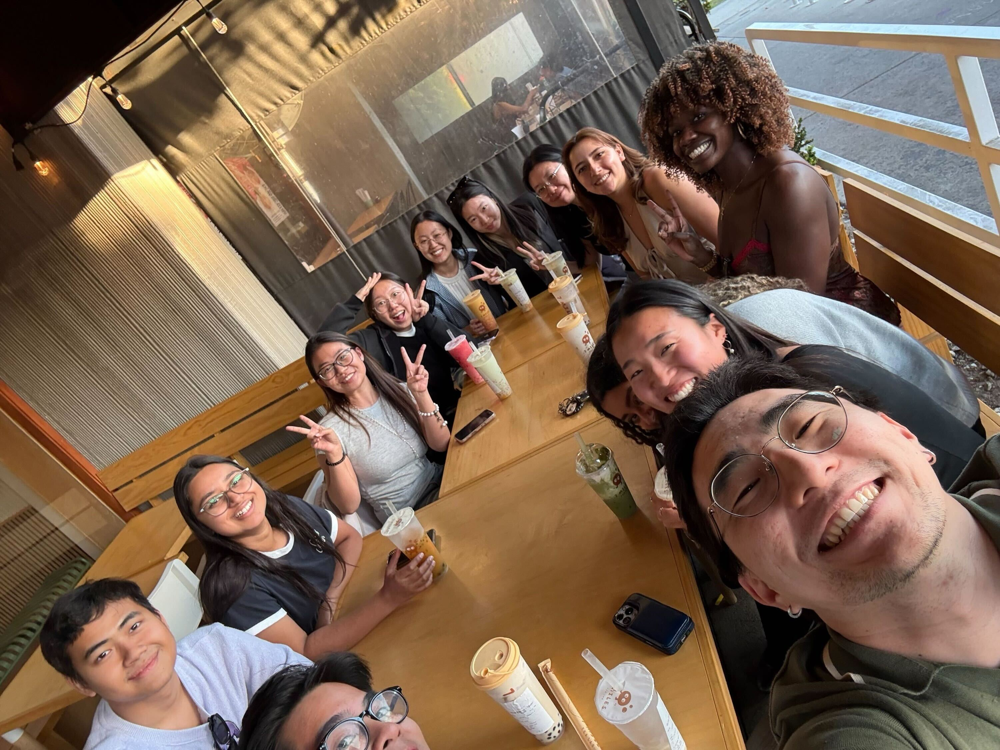
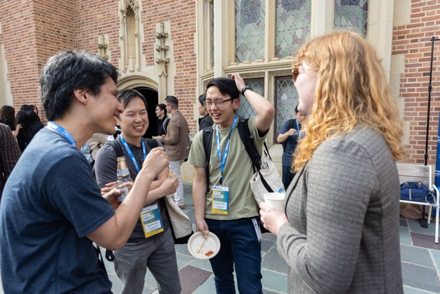

Student Directory

Students
Student
Directory
Directory
↓ Scroll down for alumni & student statistics

Student Statistics
Explore anonymized, self-reported statistics from our students. This includes stats on their academic backgrounds, research areas, and more.
View Student StatisticsAlumni
Explore our alumni profiles. This list started collecting from the class of 2026.
Explore the Alumni Directory